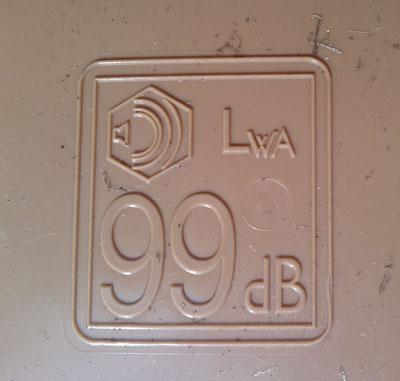

Why is my wheelie bin measured in decibels?
An unexpected curiosity arising from a common household appliance.
I've just been clearing up the remains of a tree that came down in my garden after the recent storms. Morningside isn't generally noted for hurricane-force winds, but we got them a fortnight or so ago while we were away. In doing so I noticed that the inside of the wheelie bin that we're supplied with by Edinburgh council for garden waste has a peculiar marking:

This seems to indicate that there's something about the bin measured in decibels: a logarithmic unit of relative power. There's also what looks like a speaker next to it.
Which rather begs the question: why is my wheelie bin measured in decibels?
My first thought was sound: wheelie bins are notoriously noisy when wheeled around, so perhaps this is the sound output one expects from this particular model. However, 99dB is approximately the sound level of a jackhammer at 1m distance, and considerably more than the sound level at which one is recommended to wear ear defenders. Much as I dislike wheelie bins being wheeled around early in the morning, I doubt they're a threat to my hearing.
Perhaps this is a level of sound that the wheelie bin can muffle? Quality product though it is, it hardly seems likely that it would muffle the sound of a jackhammer being used inside it. Even if one wanted to. And such an application seems, shall we say, a little exotic for the manufacturer to have printed this specification on every wheelie bin they sell. If this is the case, it should perhaps be better advertised.
It could be the sound made by a wheelie bin full of bottles being tipped out, but that's surely a function of the bottles and the manner in which they're emptied rather than being a property that should be stamped on the bin.
Another use of decibels is in electronics, specifically to measure the power of an amplifier or radio antenna. It'd certainly be possible to use a wheelie bin as an amplifier for a speaker, although that too sounds somewhat esoteric. As a radio antenna it suffers the disadvantage of not being conductive and so not suitable as a waveguide. I suppose you could coat the inside with tinfoil, but we're again into not-exactly-mainstream-customer-uses territory.
So I'm somewhat at a loss: any suggestions, however inane, gratefully received.
Comments
Comments powered by Disqus